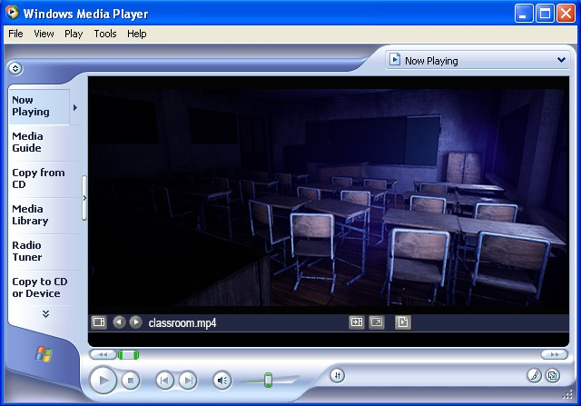
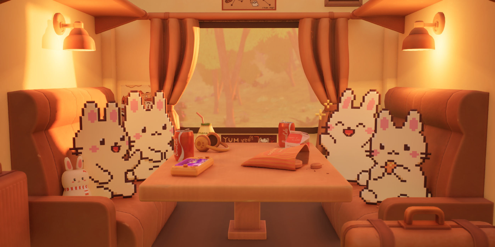
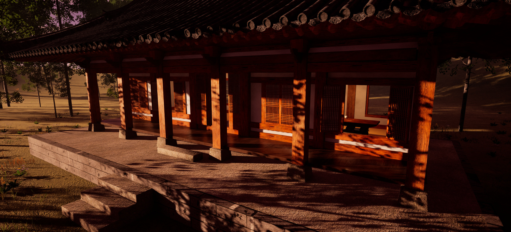
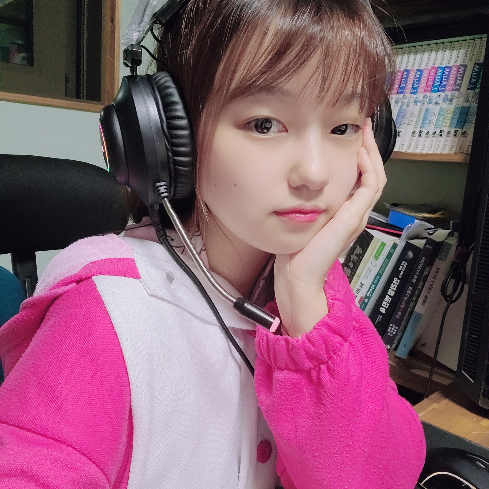

Projects






3D Environment Artist / 3D Generalist

I am a 3D Environment Artist (3D Generalist) based in Canada.
I specialize in creating immersive, realistic game environments with a strong focus on visual storytelling,
composition, and modular workflows.
For over a year, I have worked at an independent studio,
contributing to a realistic sandbox game and a casual 2D+3D RPG.
My primary focus is realistic environment art and
narrative-driven world design, but I am also open to working in related areas
such as VFX, texture creation, Trim Sheet technique, pixel art, and basic animation.
I enjoy expanding my skill set and adapting to different creative challenges.
3DS Max: General Modeling (Buildings, props)
ZBrush: Character Modeling
Blender: GeoNodes
Substance Painter: General texturing and baking normal
Substance Designer & Sampler: Making textures
Photoshop: Editing textures and etc
Trim Sheet technique
Unreal Engine 5: Level Design(blockout), Lighting, Shader
Marmoset Toolbag 4: Render materials and props
UE5 Niagara System: Pixelated and realistic VFX
Aseprite: Pixel characters and Environment
Adobe Premier Pro: Video Editing
Adobe Fresco: Simple Concept Art
Jira: Time management
GitHub Bash: Collaboration



Created high-quality 3D props and environments in a realistic medieval fantasy style with optimized topology for real-time rendering. Developed modular textures using Substance Designer and trim sheet workflows, and collaborated with level designers to enhance visual storytelling.
Produced and implemented 3D structural, furniture, and character assets in Unreal Engine 4 for virtual office and retail environments, working closely with team members to ensure visual quality and performance.
Processed and textured 3D-scanned historical artifacts using ZBrush and Photoshop, producing finalized models and renders for heritage conservation documentation.
Graduated from a Game Programming program in Canada with a 3.94 GPA, building strong skills in shader development, real-time rendering, and engine workflows. The Capstone project 'Redemption' allows me to effectively bridge art and engineering, supporting efficient collaboration and high-quality production.
Graduated in 2022 from Korean National University of Cultural Heritage (한국전통문화대학교) with a Bachelor’s degree in Conservation Science. Studied the analysis, processing, and preservation of stone, wood, metal, and painted surfaces, focusing on preparing historical artifacts for museum exhibition. Gained hands-on experience with chemical conservation methods and worked as an English guide in a museum, supporting international visitors and cultural outreach.
📧 Email: soominlee0522@gmail.com
🔗 LinkedIn: linkedin.com/in/soomin-lee-ta/
🎨 ArtStation: artstation.com/soomin_ta